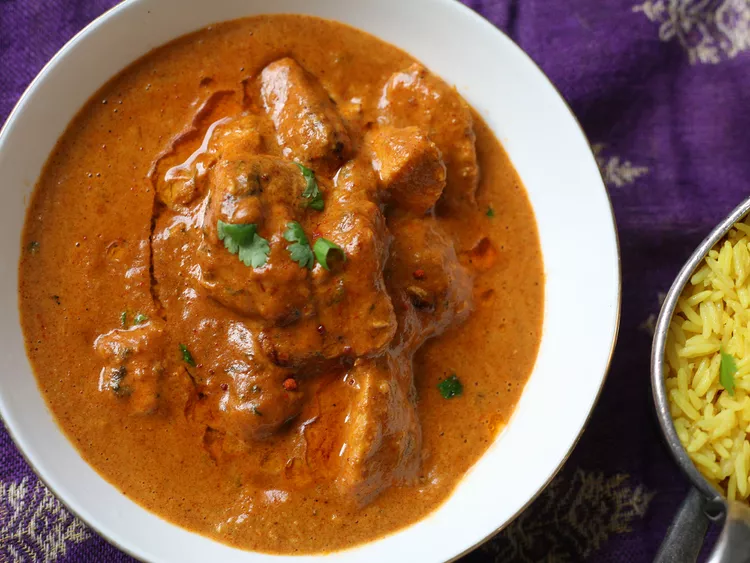

Indian Chicken Tikka Masala

Home
Description:-
- This Indian chicken tikka masala is an easy but flavorful version of everyone's
favorite mild-medium curry! Serve with naan bread and mango chutney.
- Garnish with additional cilantro leaves.
Ingredients:-
- Tomatoes (Can Chopped): 1 (14.5 ounce)
- Yogurt (Plain): 4 tablespoons
- Garlic (Roughly Chopped) : 2 cloves
- Ginger (Coarsely Chopped): 1 (1 inch) piece
- Vegetable Oil: 2 tablespoons
- onion (Chopped): 1 onion
- Masala Curry Paste: 2 tablespoons
- Ckicken Breasts: 4 skinless, boneless chicken breasts, cut into 1-inch pieces
- Salt: As per taste
- Ground Black Pepper (Fresh): As per taste
- Water: ¼ cup water
- All-purpose Flour: 1 tablespoon
- Cilantro (Freshly Chopped): 3 tablespoons
Steps:-
- Blending:
- Combine tomatoes, yogurt, garlic, and ginger in a blender and process until smooth.
- Heating:
- Heat oil in a large frying pan over medium heat.
- Add onion and fry until soft, 3 to 4 minutes, stirring constantly.
- Stir in curry paste and fry until fragrant, 1 minute more, stirring once or twice.
- Add the tomato mixture and chicken to the pan and mix together.
- Season with salt and pepper.
- Remove pan from heat.
- Marinating and cooking:
- Mix water and flour together in a bowl.
- Stir into the chicken mixture in the frying pan.
- Return pan to the heat and bring to a boil, stirring constantly, about 5 minutes.
- Reduce heat to low, cover, and cook until thickened, about 15 minutes more.
- Sprinkle with cilantro and serve immediately.